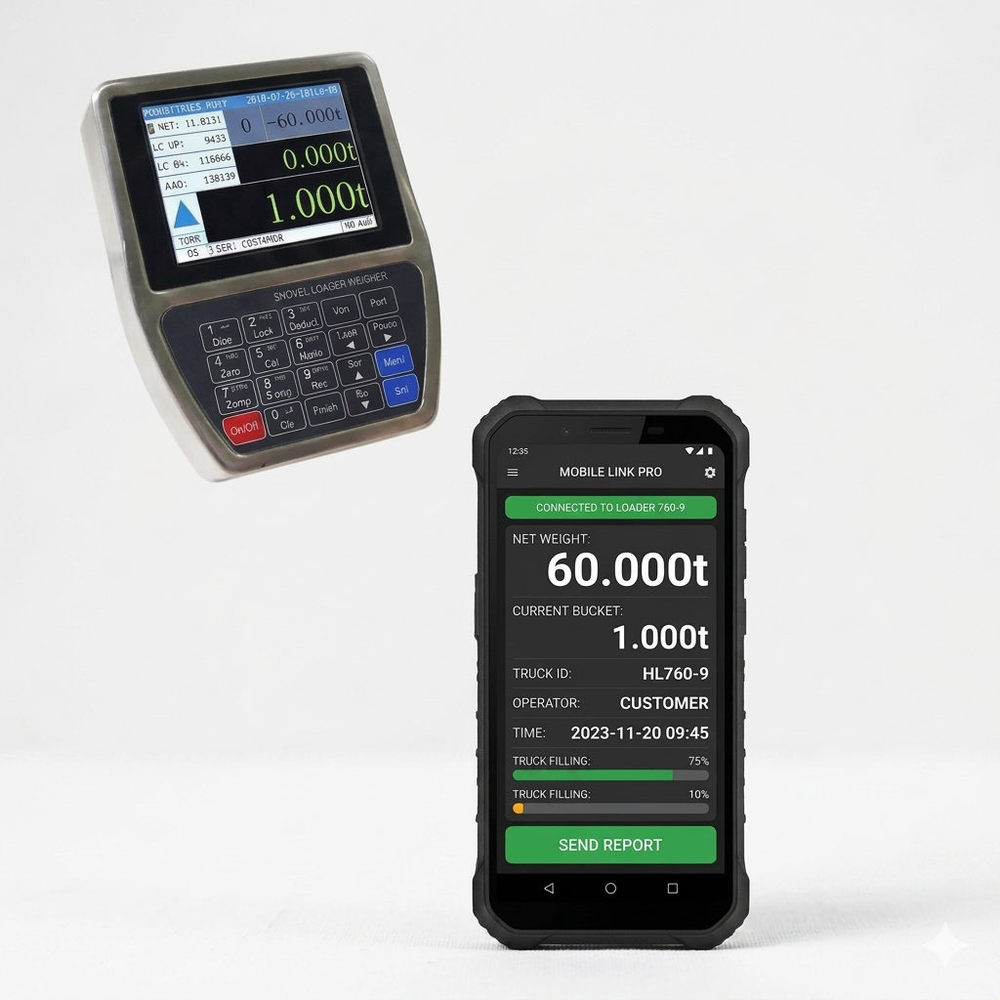
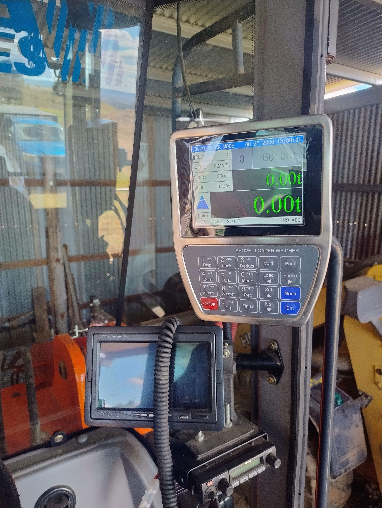

A weighing system that is set Specifically for your loader model and capacity before it leaves for installation to ensure ease of installation on site. Send us your loader model and capacity and we do the KIT setup before it leaves the workshop.
The KIT is built for your loader model and capacity, ensuring a perfect fit and optimal performance.We handle the setup so that installation on site is quick and hassle-free.Enabling the Purchaser to fit the KIT easily onto their loader without complications.
We provide comprehensive support and guidance throughout the installation process, so you can have confidence in the performance and reliability of your loader scales.
LOADER SCALES INFORMATION BUY LOADER SCALEWeb page monitoring for your loader scales.The system allows you or your cients to view loads as they happen in real-time.
Monitor your loader scales remotely through our dedicated web interface, on your own web page anytime, anywhere. An Android palm tablet with sim is included for mobile access. Phone friendly web page lets you or your clients see the loads being produced as they are loaded. Real-time updates ensure accurate tracking and efficient operations.
includes Domain and hosting for your web page for twelve months.
Full kit ready to install for $1550.00 + gst.

Intuitive interface for controlling and managing tally roll printers and related accessories. Large easy view colour display and Stainless Steel construction for durability.
Seamless integration with existing truck ID systems ensures accurate tracking and reporting. Ideal for both small and large-scale operations.
Full kit ready to install for $2750.00 + gst.
